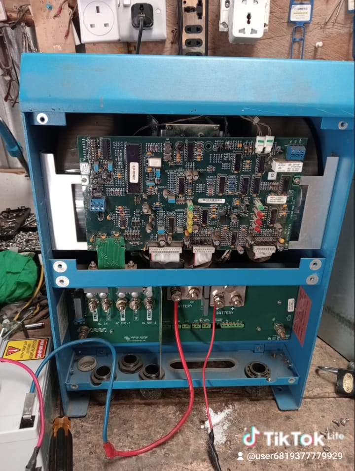

01
TECHNICAL REPAIR
Inverter Repair & Troubleshooting
Professional diagnosis, repair and maintenance of solar, hybrid and backup power inverters. We investigate faults before recommending the appropriate repair.
- Error-code diagnosis
- Charging and output faults
- Component-level troubleshooting
- Testing and commissioning